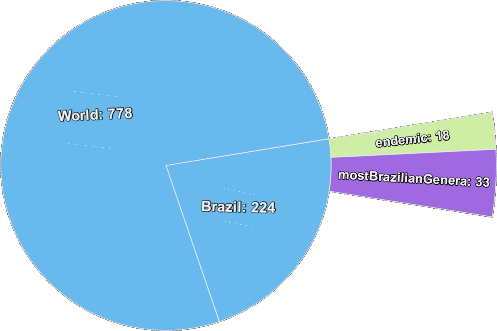
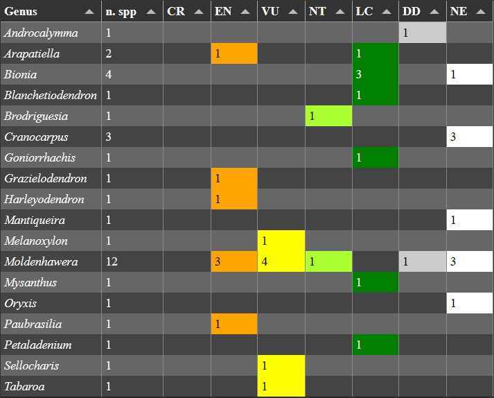
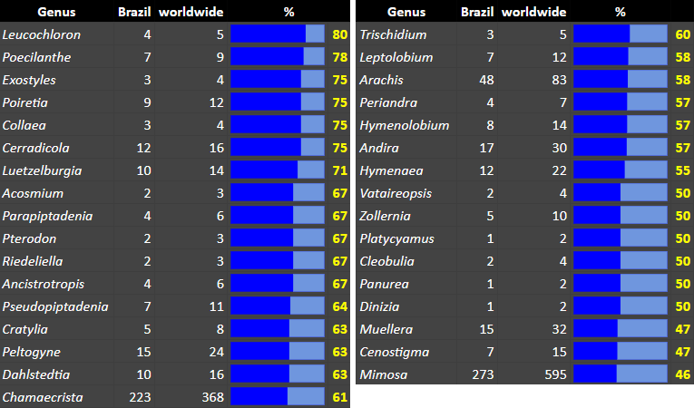
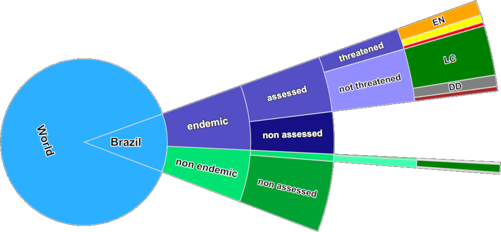
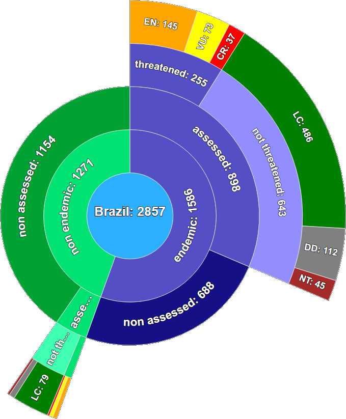
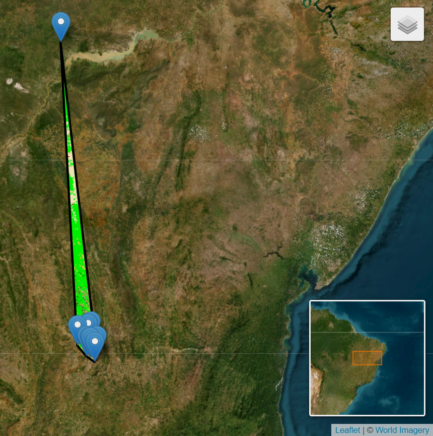
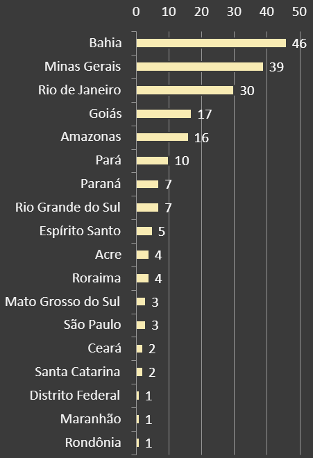

Leguminosae
states and fates of the Brazilian flora conservation
Lucas S.B. Jordão, Eduardo T. Amorim, Fernanda C. Wimmer, Gláucia C. Ferreira, Leonardo Novaes, Lucas A. Aragão, Mário Gomes, Monira B. Bicalho, Marli P. Morim, Pablo H.A. Mello, Vicente Calfo, Eduardo Fernandez
Specialists: Ana M.G.A. Tozzi, Ana Paula F. Perez, Andreia S. Flores, Andressa Novaes, Angela L.B. Sartori, Angela M.S.F. Vaz, Briggitthe Melchor, Caio V.V. Damasceno Melo, Catarina de Carvalho, Domingos B.O.S. Cardoso, Elvira R. Souza, Fabiana Filardi, Fabio Kochanovski, Fernando M. Fernandes, Flávia C.P. Garcia, Haroldo C. Lima, João R.V. Iganci, Jorge Antonio Silva Costa, José F.M. Valls, José M. Fernandes, Juliana G. Rando, Laura C.P. Lima, Leila C. Costa, Lucas S.B. Jordão, Luciano P. Queiroz, Marcelo F. Devecchi, Marcelo F. Simon, Marli P. Morim, Matheus M.T. Cota, Nina L.A. Nunes, Rodrigo Camargo, Roseli Bortoluzzi, Rubens T. de Queiroz, Silvia T.S. Miotto, Valquiria F. Dutra, Vanessa Terra dos Santos, Vidal F. Mansano, Vinícius C. Souza
https://lsbjordao.github.io/8ILC/worldwide (genera): 778
 sources: WCVP (2022-05-26) | FFB http://floradobrasil.jbrj.gov.br/ (2023-05-19)Endemic genera: 18
the most Brazilian genera: 33
worldwide (species): 22,323
Brazil: 2,857 (12.8%)
assessed: 1,024 (35.8%)
threatened species: 277 (27%)

Threatened species by biomes
Threatened species
Criteria B of Red List IUCN
Tabaroa caatingicola
|
EOO: 7,611 km² AOO: 40 km² Caatinga Bahia State Outside protected areas Assessed: 2020 |
|
EOO: 7,611 km² AOO: 40 km² Caatinga Bahia State Outside protected areas Assessed: 2020 |
 |
Sellocharis paradoxa
|
EOO: 21,539 km² AOO: 12 km² Pampa Rio Grande do Sul State Protected areas: Assessed: 2012 |
|
| Grasslands in EOO | Natural areas in EOO |
|---|---|
|
|
|
| annual rate: -1.78% | p-value: 2.9808e-26 | annual rate: -1.68% | p-value: 3.8864e-23 |
Tech stack


 Bull-board
Bull-board
GEE and MapBiomas

Bull-CNCFlora
Ongoing and next steps
- Integrate data from MapBiomas Land Trasitions, MapBiomas Alerta, and MapBiomas Fogo
- Explore methods to integrate fire data from MapBiomas into assessments effectively
- Enhance communication with collaborators by implementing a messaging system to streamline the collection of data
- Improve historical data analysis techniques through advanced methodologies
- Advance the assessment of all Legume species
Acknowledgements
To the coordination of Flora and Fungi of Brazil, to the Legume specialists, and herbaria curators
Appendix
threatened by category
CR
EN
VU
threatened by genus
Mimosa
Chamaecrista
Swartzia
Inga
Muellera
threatened by domains
Atlantic
Cerrado
Amazon
Caatinga
Pampa
Pantanal
threatened by States
by number of States
occur in 1 State: 198 (71.4%)
occur in 2 States: 40 (14.7%)